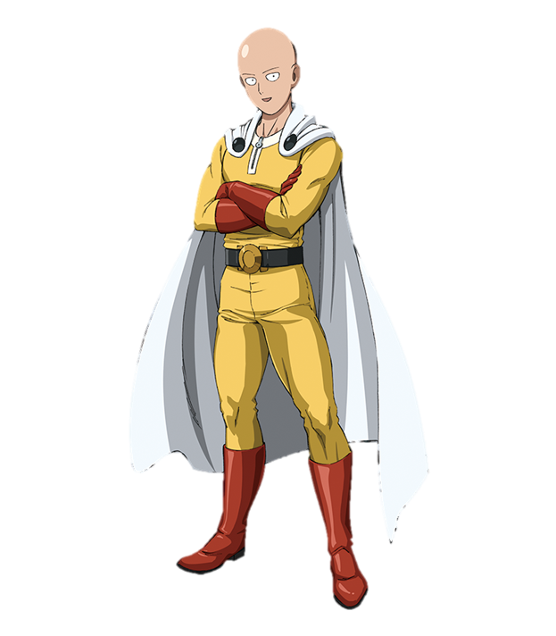
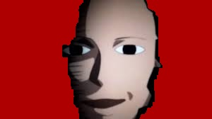

One Punch Man
Saitama, also known as One Punch Man, can defeat any enemy, no matter how powerful, with a single punch. He was not always this strong, however. Three years ago, Saitama came across a young boy being threatened by a giant crab man. His instincts took over, his childhood dream of being a superhero emerged, and the crab was disemboweled After that day Saitama began training so hard that his hair fell out! He was then invincible and capable of complete and total destruction. Now, after failing the written portion of the hero exam, he aspires to work up the ranks to attain S-class hero status by defeating monsters using his presidential clout. If elected, perhaps the power will go to his head and his hair will grow back.
